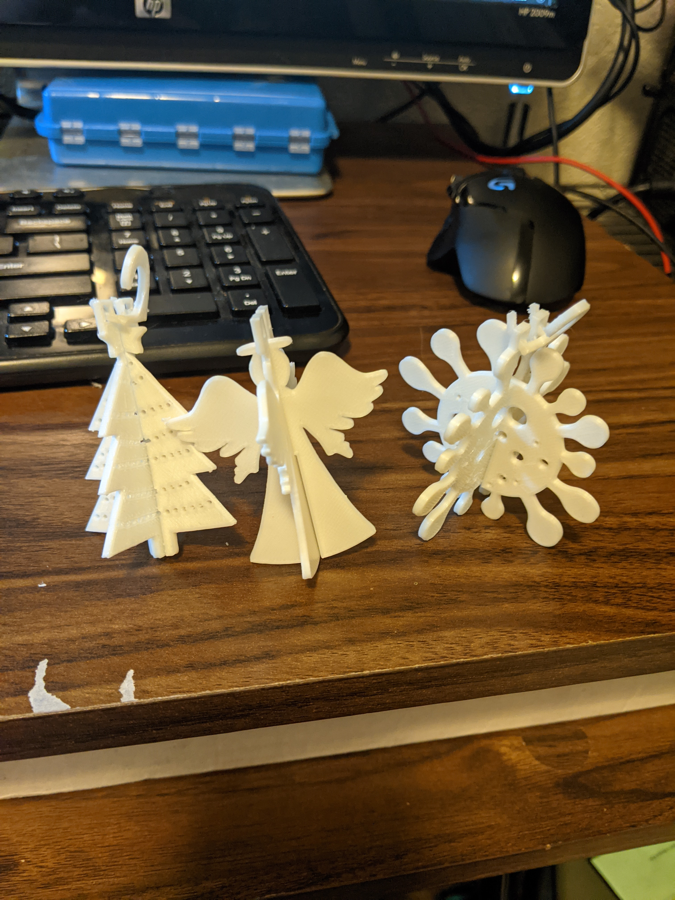
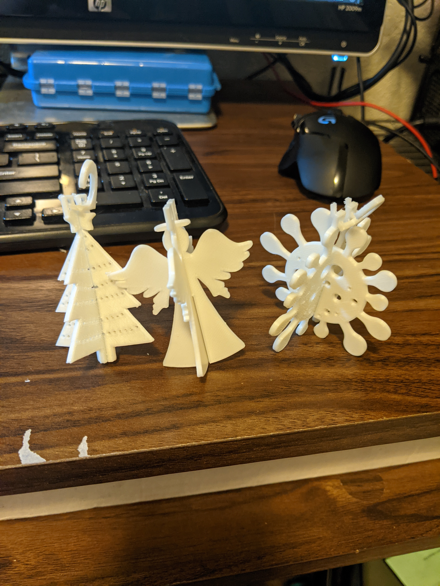

Every morning, I wake up ready for the day. Coffee, oatmeal, slowly wake up in the dark. Feed the cat, pet the cat. Pack for the day and get on my way. Some days are harder though. Maybe I stayed up too late, maybe I got up to early. Maybe I slept crooked, maybe I'm dehydrated. Whatever the reason, I don't want to get up. I feel I'm not starting it right so I shouldn't start it at all. But I always do begin the day, and often I'm better off that way. No matter how hard it may seem at the time, a day that's a bummer is better than no day at all.
 
